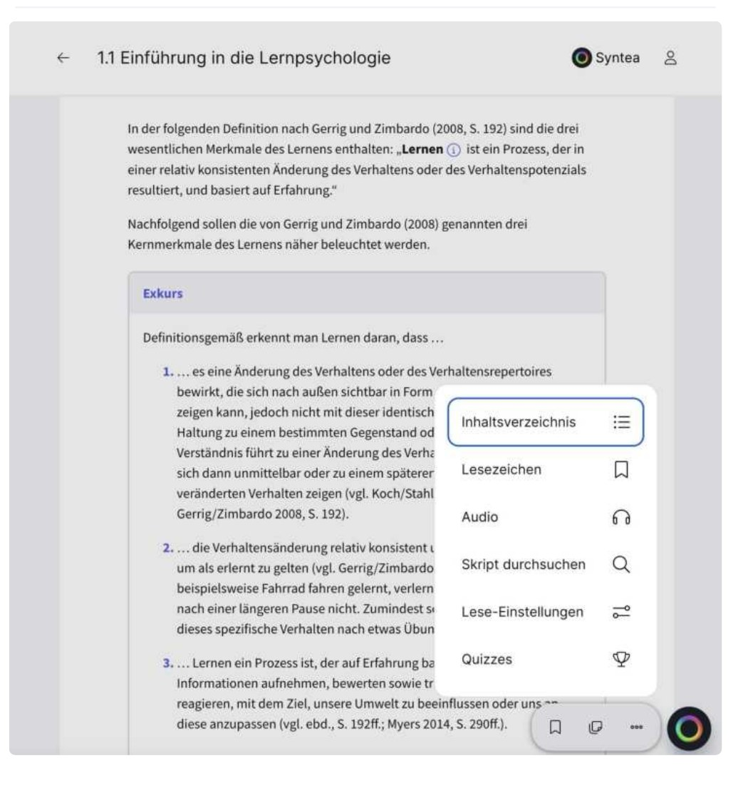
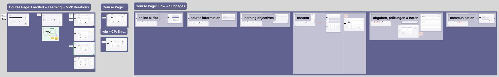
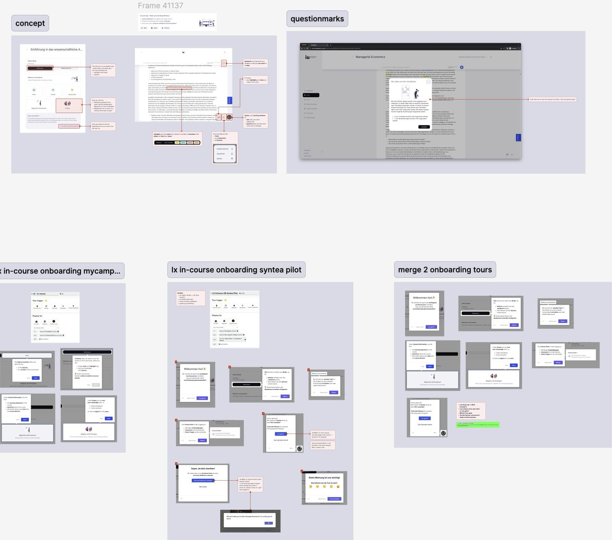
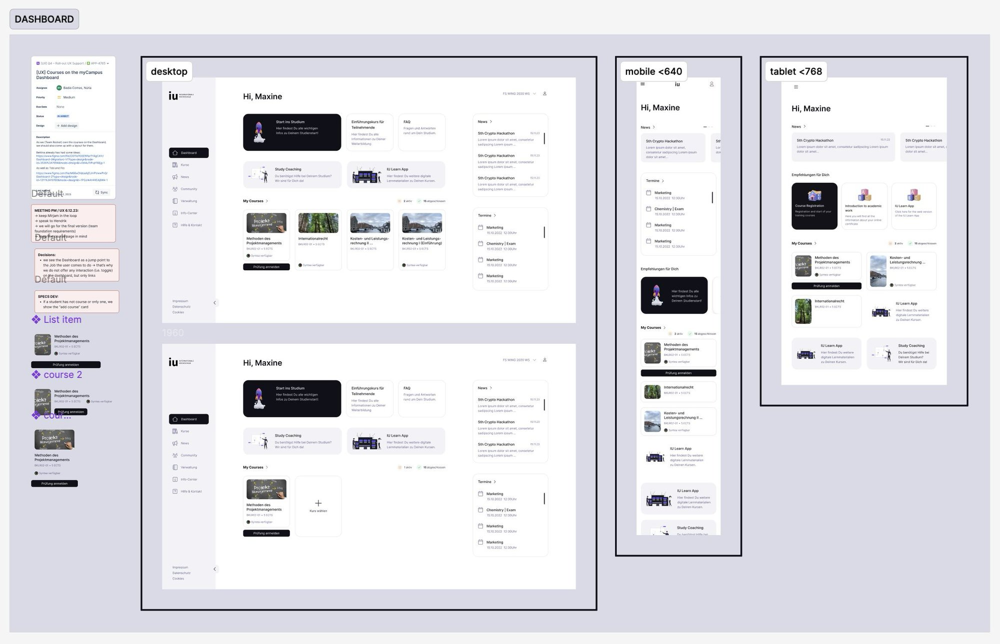

IU International University · Learning platform · 2023 – 2025 · Lead UX, Learning Domain
myCampus 2.0: three systems into one learning platform
Students studied across two book readers and three content systems that shared a login but not a logic. myCampus 2.0 consolidated them into one learning platform, a migration for 80,000 students.

The problem
For the people using it
Every part of the platform looked and behaved differently. Students who did not understand what to do next in their first week disengaged silently, and a migration threatened the one thing they trusted: their own progress and notes.
For the business
Maintaining two parallel book readers and three content delivery systems cost the organisation time on every change. Consolidation was inevitable; doing it without an adoption collapse was the job.
Project detail
How I worked
Research the workflows before the screens
Interviews and observation to map how students actually study across the old systems, and to co-define what the migration had to preserve: notes, progress, familiar paths.
Design the rollout as a product
A phased rollout strategy with explicit success criteria per phase, so the team could learn and course-correct before scaling to everyone.

Treat onboarding as its own problem
In-course onboarding and satisfaction measurement built in from the first release, because the highest drop-off was at the point of confusion, not the point of difficulty.

Validate before you scale
Assumptions tested in a beta before the full migration, qualitatively and quantitatively, at the decision points where expectations break.

What it changed
What I took from it
Data portability is the foundation of user trust during platform migrations. Preserving familiar mental models matters more than technical elegance in high-risk transitions.